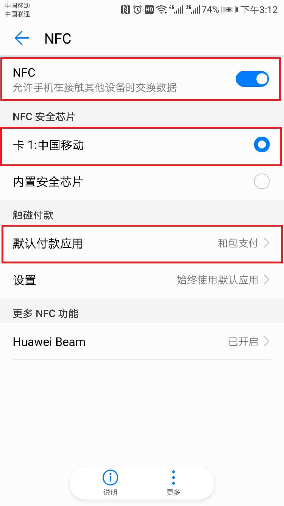

步骤一
如遇到提示SIM卡不支持，请拨打客服电话，客服触发卡片AC重置，发起短信更新流程，重启手机进入和包，点击“生活”，点击“NFC卡”；重启手机后未解决用户可执行下一步骤。

步骤二：针对未注册和包NFC业务的用户
a)如手机系统版本为安卓8.0版本，需用户将卡片放置于安卓8.0以下版本的手机进行正常的卡片AC升级后，再放置在安卓8.0的手机上使用。
b)如手机系统版本为安卓8.0以下版本：
b1.确认卡片放置在卡槽1，在手机设置的“更多”菜单内，选择“NFC选项”并设置“安全芯片”为中移动SIM卡，设置“默认支付程序”为和包支付客户端；
b2.有进入和包，并点击“生活”和“NFC卡”；华为、联想、VIVO等手机需设置“和包NFC插件”的关联启动，关联启动教程：
1、打开和包，点击“NFC卡”频道，提示安装和包NFC插件，点击升级并完成安装。

2、点击完成，退出和包，然后打开手机设置菜单，找到“权限管理”一项。
3、在权限管理页面中点击“应用”，然后找到“和包NFC插件”，点击进入。注意：是在“和包NFC插件”权限管理中，将“关联启动”开关打开
4、重新打开和包，切换到“NFC卡”频道，弹出手机管家管理界面，点击“允许”按钮，再次退出和包。注意：如果该界面没有出现，请确认第三步的“关联启动”开关已开启并退出和包重新尝试。
5、再次打开和包，切换到“NFC卡”频道，出现“正在更新数据”的提示，等待数秒，将会出现“更新数据成功”的提示。


6、如在安装和包NFC插件过程中，遇报错为“自定义程序冲突”，请卸载和包，重装和包再尝试以上操作。
b3.如未点击“生活”和“NFC卡”的操作，请执行（2）项操作；
步骤三
针对已注册和包NFC业务的用户确认用户手机和卡是否更换，卡槽是否变换，在手机设置的“更多”菜单内，选择“NFC选项”并设置“安全芯片”为中移动SIM卡，设置“默认支付程序”为和包支付客户端；是否有打开和包“生活”频道，点击“NFC卡”；根据（2）设置关联启动。